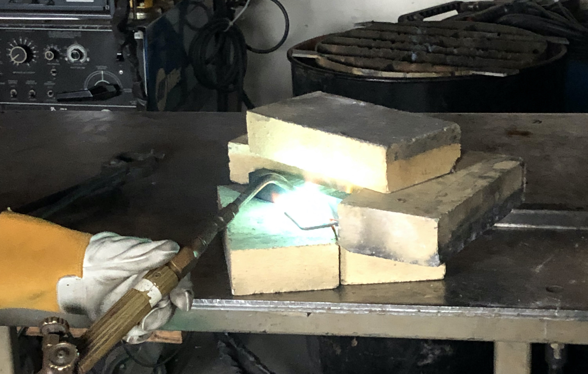

Making a Permanent Magnet: Later Attempts

The main problems with trying to make a magnet in the coal fire were the long amount of time it took to heat up the metal and our inability to start the coal fire while we were on campus. Both of these problems lead to long turn around times between attempts causing us to only try making a magnet four times in the first term of the project. For the second term, we reached out to Ian Anderson a Senior Instructional Lab Technician at WPI to help streamline the process and run it on campus. In order to cut down the time to heat up the metal we decided to break our rule of not using modern technology during testing to speed up the process and then return to older technology once we had successfully created a magnet. The new technology we began using was the oxyacetylene torch to heat the metal. In addition, we were also given neodymium magnets to replace the solenoid as the source of the magnetic field. In our first attempt we were able to heat the metal up to a cherry red glow which we estimated to be around 1400 degrees fahrenheit. Then we applied the magnets to either end of the metal. Unfortunately there was a coating on the metal that vaporized and then caught on fire so we had to pull the magnets off before it got out of control. Additionally, we destroyed the epoxy coating on the magnets that we borrowed.
After this attempt, we ordered our own magnets to do the experiment with. We ordered two strong neodymium magnets with dimensions 40 by 40 by 20 millimeters. We used a larger nozzle for the torch compared to our previous attempt. This time, we placed the magnets on the bar while heating up the center with the torch, instead of attaching the magnets after the bar reached the correct temperature. The assumption we were making was that the heat from the torch would not conduct all the way to the ends of the bar, since we were applying heat in a concentrated manner at the center of the bar. However, we were wrong; the magnets attached to the end of the bars reached their Curie temperature while we were heating up the iron. Almost simultaneously, the neodymium magnets were rendered inert, and both of the magnets fell off of the bar. We purchased new magnets for future attempts, but we did not get a chance to try again before the pandemic made using the machine shop impossible. This was a stark reminder that the Curie temperature is a double-edged blade; while it can add magnetic properties to metal, it will also destroy all existing magnetic properties. It was clear that we needed a way to prevent our “source magnets” from reaching the same temperatures as our target iron.
Videos
This video shows us heating up the iron in the welding room with an oxyacetylene torch.
This video shows the result of applying the magnets coated with an epoxy directly onto the metal. We were told the epoxy was "un-meltable" but everything has its price! (Everything turned out alright.)